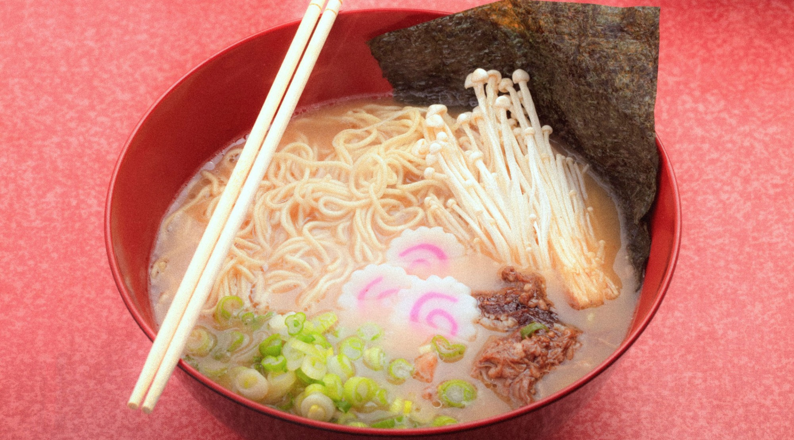
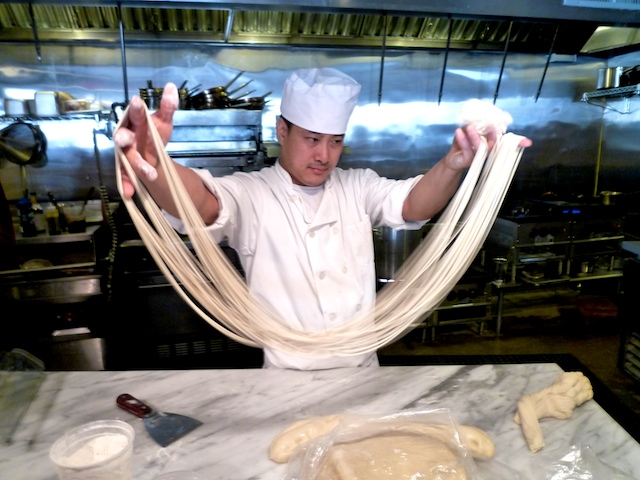

Simply Ramen is devoted to the perfectionism of tonkotsu style ramen. Based on years of
research, Simply Ramen unveils their innovations to the popular pork bone broth. They
were able to infuse pork, chicken and fish stock in order to create the most delectable
mixture perfect in tandem with their hand pulled noodles.

Simply Ramen also offers a challenge until March 13, 2020 called the Simply Endless Ramen Challenge.
There are 2 categories that you can attempt. Speed eating and Stamina eating. Whether you are here to
simply try a bowl or challenge yourself, try out what they have in stock. Currently locations are in Rochester, NY.
 Home
Menu
Locations
Apply Here
Contact Us
Home
Menu
Locations
Apply Here
Contact Us